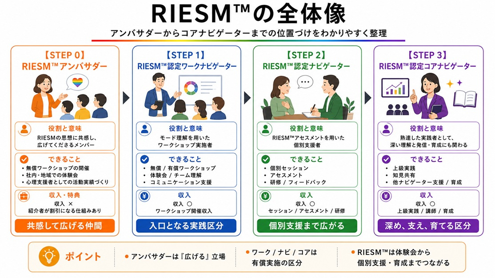

ナビゲーター制度 全体マップ

基本思想

🌈RIESM™ナビゲーター制度の目的は、🌈RIESM™を誰もが使える共通言語として広げることです。
モードを通じた自己理解・他者理解の輪が広がると、「自分も誰かに伝えたい」という想いが自然と生まれます。
本制度は、そうした広がりから生じる需要を受け止め、誰もが安全かつ適切に🌈RIESM™を扱えるようにするための「入り口」として設計しました。
なぜ認定ナビゲーターが必要か
🌈RIESM™が広まるにつれ、その世界観を正しく届け、伴走できる存在が不可欠になります。
認定ナビゲーターは単なる資格ではなく、他者の人生（Cockpit）に触れる役割への【ライセンス】であり、目の前の人に真摯に向き合う「覚悟の証」です。
このライセンスがあるからこそ、相手が安心して話を聞ける「信頼の補助線」として機能します。
1 【重要】利用範囲と認定について
社内・ご自身の組織内での利用：【認定不要・費用負担なし】
🌈RIESM™アンバサダー（登録フォームの実行のみでOK）

ご自身の担当部署や自組織内で、🌈RIESM™の入り口である「4つのモード」を用いたワークショップを実施できます。名乗るための資格は不要ですが、🌈RIESM™アンバサダーとして自覚をもって活動いただくため、以下のフォームより登録をお願いしております。
【ご安心ください（登録について）】
登録に住所や電話番号の記載は不要です。連絡のつくメールアドレスのみご用意ください。名簿への掲載も「ニックネーム」および「活動地域（都道府県）」のみとなります。
ワークショップ実施時などに、そのニックネームでナビゲーション（ファシリテーション）をすると和やかに進行することもできますので、ぜひお試しくださいね✨
実施に不安がある方へ（サポート）
ワークショップの進行については、充実した教材や解説動画をご用意しておりますので、初めての方でも安心して実施いただけます。
それでも「いきなり開催するのは自信がない」「自組織に合わせた進め方を相談したい」という方には、事前のオンライン個別相談（60分 / 7,000円）にてサポートすることも可能です。どうぞお気軽にご相談ください。
以下は、主に社外、もしくはご自身の有償での支援活動
（カウンセリング・キャリアコンサルティング等）に🌈RIESM™をご利用の方向けの内容です。
社外への提供・有償での実施：【認定必須】
🌈RIESM™認定ワークナビゲーター／認定ナビゲーター（要件あり）
対価をいただいてワークを実施する場合や、社外のクライエントへ提供する場合は、活用範囲に応じて本ページでご案内する「認定区分に応じたライセンス」が必要です。
2
有償実施時の🌈RIESM™認定区分と要件
外部のクライエントや組織に対して🌈RIESM™を提供する際の基準です。
📝RIESM™の認定区分について
RIESM™では、有償活動での活用範囲に応じて、認定の段階を分けています。認定区分は、🌈RIESM™認定ワークナビゲーター、🌈RIESM™認定ナビゲーター、🌈RIESM™認定コアナビゲーターの3つです。
🌈認定ワークナビゲーター
モード理解を用いたワークショップを実施します。
🌈認定ナビゲーター
RIESM™アセスメントを用いた個別支援・研修・フィードバックを実施します。
🌈認定コアナビゲーター
深い理解と発信・育成にも関わる熟達者の位置づけです。
🌈RIESM™認定ワークナビゲーター
【できることと位置づけ】
RIESM™認定ワークナビゲーターは、モード理解を用いたワークショップを実施するための認定です。対象となるのは、🌈RIESM™を受検し、フィードバックを受けた方です。
モード理解をもとにしたワークショップを実施できます。主な活用場面は、チームビルディング、コミュニケーション改善、自己理解・他者理解ワークです。
モード理解は、自己理解、他者理解、チーム内の相互理解に役立つものです。まずはRIESM™を自分自身で受け、フィードバックを受け、自分のモード理解を深めたうえで、ワークショップとして活用ください。
主な活用：体験会・チーム理解・コミュニケーション支援
ただし、個別のRIESM™アセスメント結果を用いた研修、セッション、フィードバックは、RIESM™認定ナビゲーターの範囲とします。
ワークナビゲーター認定の要件を見る
- 🌈RIESM™を受検していること
- RIESM™のフィードバックを受けていること
- モード理解を用いたワークショップとして実施範囲を守ること
- 認定番号の付与とninin公式サイトの認定者一覧掲載を基本とすること
※アセスメント結果を扱う個別支援、研修、フィードバックは認定ナビゲーターの範囲です。
🌈RIESM™認定ナビゲーター
ASSESSMENT【できることと位置づけ】
RIESM™アセスメントを利用した研修や個別セッションについては、RIESM™認定ナビゲーターのみが実施できるものとします。
アセスメント結果を扱い、個人へのフィードバックや研修設計に活用する場合には、より慎重な理解と倫理的配慮が必要になります。倫理綱領でも、アセスメントは「訓練を受けた範囲内」で実施するものとされています。
主な活用：セッション・アセスメント・研修
RIESM™をどのように扱うのか、どこまで説明してよいのか、どこからは言い過ぎになるのか、フィードバック時に何に注意すべきか、相談者の自己決定をどう尊重するのかを認識合わせします。
🌈RIESM™認定コアナビゲーター
EXPERT【できることと位置づけ】
RIESM™認定コアナビゲーターは、認定費用を支払って取得するものというより、時間と研鑽の積み重ねによって到達する場所のようなものです。
数多くの実施経験、フィードバックセッション、スーパーバイズ、実践内容の振り返り、RIESM™に関する論文や考察、note記事などの作成や発表。そうした積み重ねをもとに、十分に熟達したナビゲーターに対して認定していくものです。
主な活用：上級実践・知見共有・他ナビゲーターへの貢献
早く増やすことが目的ではありません。RIESM™を倫理的に扱い、深く理解し、他のナビゲーターの学びにも貢献できる方を、時間をかけて慎重に認定していきます。
コアナビゲーターの位置づけを見る
認定コアナビゲーターは、少なくとも数年単位で、実践、振り返り、発信、スーパーバイズ、ディスカッション、知見の蓄積を重ねた先に、ようやく見えてくる位置づけです。
- 数多くの実施経験
- フィードバックセッション
- スーパーバイズ
- 実践内容の振り返り
- RIESM™に関する論文、考察、note記事などの作成や発表

3 ワークショップの実施条件とnininへのご依頼について
認定ナビゲーターの有償活動
【ロイヤリティ不要・全額活動収入へ】
参加費は、準備や進行に対する専門性への対価です。nininへのギャランティやロイヤリティ等の支払いは不要で、原則としてナビゲーター自身の活動収入となります。
【料金目安・無料実施のルール】について
【料金設定の目安と実費】
2時間程度のワークショップで、1人あたり2,000円〜3,000円（下限1,000円）を標準とします。
※企業・団体向けは「実施料・講師料」として柔軟に設定可能です。
※会場費・交通費等の実費は別途請求可能です（事前明示必須）。
【無料実施と自己責任の原則】
社内勉強会、普及活動、地域コミュニティ等では無料で実施しても構いません。なお、料金設定、集客、決済、返金対応、税務処理等の実務および金銭トラブルについては自己責任となります。
■ 認定を受けて活動を始めたい方へ
有償実施時の🌈RIESM™認定区分と要件を見るnininへの直接ご依頼
ご自身の組織やチームで🌈RIESM™ワークショップを実施したい場合、ninin（または認定派遣ナビゲーター）へ直接ご依頼いただくことも可能です。
【対応形式・費用について】
- オンライン・対面の双方に対応いたします。
- 現在、対面実施は【東京近辺を中心】に対応しております。
- 対面開催の場合は、実施費用に加えて交通費等の実費を別途申し受けます。
※詳細なお見積りやご相談は、お問い合わせ窓口よりお気軽にご連絡ください。
4 運営ポリシー
■ 認定権限と上位資格
🌈RIESM™全体の設計およびすべての認定は、ninin代表が行います。資格ビジネス化を防ぐため、コアより上位の認定は設けません。
■ アセスメントの利用
個別のRIESM™アセスメント結果を用いた研修、セッション、フィードバックは、RIESM™認定ナビゲーター以上の範囲とします。
■ 認定証を発行しない理由
現時点では、認定ナビゲーター向けの認定証は発行しません。アセスメント価格をできるだけ現実的な範囲に保ち、必要なところにはコストをかけ、不要なところにはコストをかけないためです。認定の証明は、認定番号の付与とninin公式サイトでの認定者一覧掲載を基本にします。
■ 名刺・WEBサイトへの掲出
名刺やWEBサイトへの掲出・記入は可能です。RIESM™のロゴ、認定番号、登録一覧リンクへのQRコードをセットで掲載してください。文字掲載の場合は「🌈RIESM™認定ナビゲーター」または「🌈RIESM™認定ワークナビゲーター」、認定番号、認定者一覧がninin公式サイトにて確認可能である旨を記載してください。
■ 実施前の原則確認テスト
ワークショップ実施前には必ず「ナビゲーター原則確認テスト（5問）」を実施してください（約2〜3分）。知識を測るのではなく、ご自身のマインドセットを整えるための大切なルーティンです。
■ ワークショップの実施報告
認定要件のクリアや活動実績の蓄積のため、ワークショップを実施した際は必ず 【実施報告フォーム】 よりご報告をお願いいたします。
5 🌈RIESM™ ナビゲーター名簿

Certified 認定ナビゲーター（ライセンス保有者）
【掲載情報に関する基本原則】
本制度において、公式HPへの掲載は「認定ナビゲーターであることの唯一の証明」となります。掲載情報は「都道府県」および「本名（フルネーム）」の公開を基本としております。
※特例措置：
・本名非公開の場合：「苗字のみ」とし、活動地域を【都道府県・市区町村】まで公開。
・地域非公開の場合：地域を「ー」とし、氏名を必ず【本名（フルネーム）】で公開。
| 区分 | 番号 | 活動地域 | 氏名 |
|---|---|---|---|
| データを読み込んでいます... | |||
Registered RIESM™アンバサダー（社内・組織内登録者）
【掲載情報に関する運用】
社内や自組織内で🌈RIESM™を活用されている方々です。この名簿への掲載は任意（無料登録時）であり、「活動場所（都道府県）」および「ニックネーム」での掲載となります。
| 登録番号 | 主な活動場所 | ニックネーム |
|---|---|---|
| データを読み込んでいます... | ||